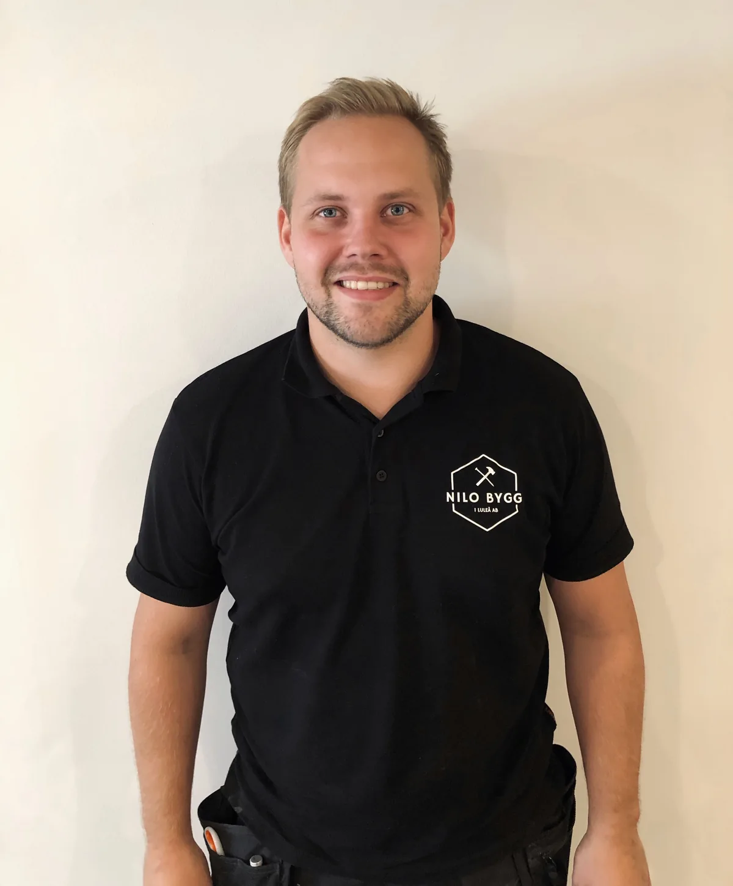
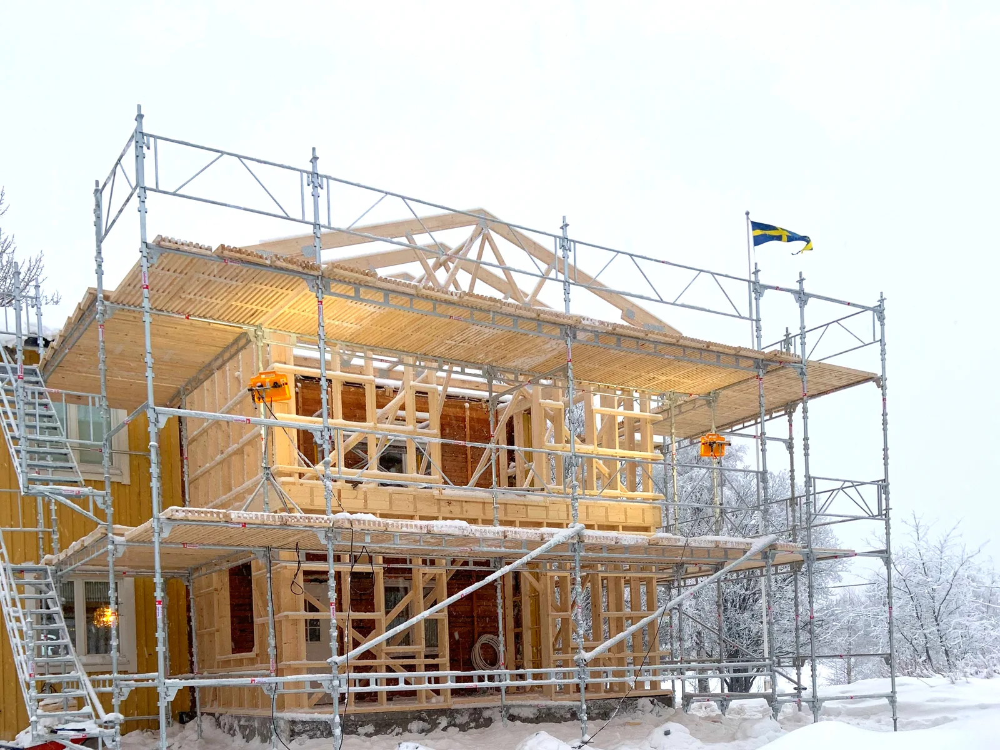

Vi är supernöjda!
Stefan
Om NILO Bygg
Ett byggföretag för dig som vill ha hjälp av snickare nära till hands.

Nils Jakobsson · Grundare
Nils Jakobsson startade NILO Bygg i början av 2020, efter flera år som snickare på andra byggföretag. Företaget arbetar med både mindre uppdrag och större byggprojekt i Luleå med omnejd.
Jag har över tio års erfarenhet inom snickeri. Vi arbetar med allt från små servicejobb till ombyggnationer, tillbyggnader och nybyggnation.
I teamet finns också snickarna Tobias och Robin. Tillsammans med andra hantverkare och leverantörer kan vi hjälpa dig med flera delar av bygget.
Kontakta Nils
Stora och små projekt
Det kan vara mycket att ta ställning till i ett bygge. Vi lyssnar på hur du vill ha det och går igenom vilka delar vi kan hjälpa dig med. Du är välkommen att höra av dig även om alla detaljer inte är bestämda.
Våra tjänsterKunderna berättar
Vi är supernöjda!
Stefan
Mycket skicklig och noggrann hantverkare
Björn
Fint jobb, trevliga och punktliga
Marie
Utdrag ur kundomdömen publicerade på NILO Byggs befintliga webbplats.
Kontakt
Berätta vad du har i tankarna. Vi hjälper dig att ta nästa steg.